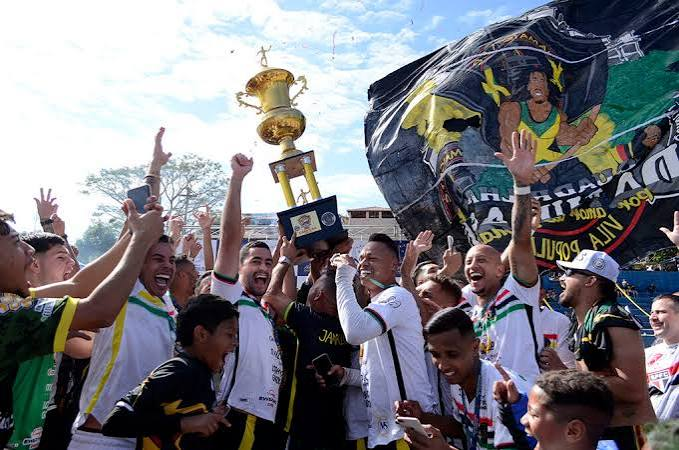

Várzea Ativa
Time de Futebol garante vaga na final do Torneio do Terrão
Com uma virada histórica nos acréscimos, o time do morro carimbou o passaporte para a grande disputa.
Por: Redação Comuna
Há 2 horas